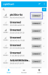
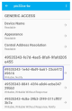
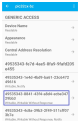
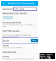
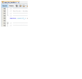

This section helps users to create a peripheral device and send/receive characters between two
connected BLE devices over Microchip proprietary Transparent UART Profile. Peripheral device
will be the WBZ451 Curiosity board and central device can either
be a Smart phone with Light Blue app or another WBZ451 Curiosity
board.
Users can choose to run the precompiled application example .hex file on
the WBZ451 Curiosity board and experience the demo or go through
the steps involved in developing this application from scratch.
Recommendation is to follow the examples in order, by learning the basic concepts first and
then progressing to the more advanced topics.
Programming the Precompiled Hex File or
Application Example
Programming the .hex File using MPLAB X IPE
Import and program the precompiled
.hex file is located in "<Harmony Content Path>\wireless_apps_pic32cxbz2_wbz45\apps\ble\building_blocks\Peripheral\profiles_services\peripheral_trp_uart\hex\peripheral_trp_uart.hex"
folder
Open and program the application example
"peripheral_trp_uart.X" located in "<Harmony Content Path>\wireless_apps_pic32cxbz2_wbz45\apps\ble\building_blocks\peripheral\profiles_services\peripheral_trp_uart\firmware\peripheral_trp_uart.X"
using MPLAB X IDE
This application enables users to send data back and forth over UART between two connected
BLE devices. On Reset, demo application prints “Advertising” which denotes the start of
advertisements and then “Connected” when connection is established. Application data to be
sent to the connected central device (smart phone or another WBZ451 Curiosity board) is entered in a terminal emulator like Tera Term.
Testing
Using a Micro USB cable, connect the Debug USB on the Curiosity board to a PC. The
Active LED turns Green once connected to the PC.
Program the precompiled hex file or
application example as mentioned.
Open TeraTerm and configure as mentioned
below:
Terminal Settings
Baud Rate/Speed – 115200 (as
configured in SERCOM configuration)
Parity – None
Data Bits – 8
Stop Bits – 1
Flow Control – None
For more details on how to set the “Serial Port” and “Speed”, refer to COM Port Setup.
Press the Reset Switch on the Curiosity
board.
Launch the Light Blue mobile app and
search for the device name “pic32cx-bz/Microchip”
and press Connect.Figure 3-113. LightBlue®
App

To receive data from the WBZ451 Curiosity board (peripheral device) to the mobile app
(central device), select “UUID: 49535343-1E4D-4BD9-BA61-23C647249616” then select
Subscribe.Figure 3-114. LightBlue®
App

Figure 3-115. LightBlue®
App
Change the Data format to UTF-8 String in
the Light Blue mobile app then enter "test" on Tera Term. The same data must be displayed
in the app.
Note: User may not be able to see “test” on the Tera Term
as user types.
Figure 3-116. LightBlue®
App
To send data from the mobile app (central
device) to the WBZ451 Curiosity board (peripheral device),
select “UUID: 49535343-8841-43F4-A8D4-ECBE34729BB3”.Figure 3-117. LightBlue®
App

Change the Data format to UTF-8
String then enter “trp uart” and click Write. The same data must be
displayed in Tera Term (see the following figure).Figure 3-118. LightBlue®
App

Note: Users can use another WBZ451
Curiosity board configured as BLE Transparent UART (central)
instead of using a mobile app.
Developing the Application from Scratch
using MCC
This section explains the steps required by a user to develop this application example from
scratch using MCC
Note: It is recommended that new users of MCC to go
through the overview.
Import component configuration – This
step helps users setup the basic components and configuration required to develop this
application. The imported file is of format .mc3 and is located in the
path <Harmony Content Path>\wireless_apps_pic32cxbz2_wbz45\apps\ble\building_blocks\peripheral\profiles_services\peripheral_trp_uart\firmware\peripheral_trp_uart.X.
Note: Import and export functionality of Harmony component
configuration will help users to start from a known working setup of MCC
configuration.
Accept dependencies or satisfiers, select
Yes.
Verify if the project graph window has
all the expected configuration. as illustrated in the following figure:
Note: Ensure that the macro
configUSE_TICKLESS_IDLE is set to 0. The macro is
available in FreeRTOSConfig.h file
#define configUSE_TICKLESS_IDLE 0
Figure 3-119. Project Graph
Verifying Advertisement,Connection and
Transparent UART Profile Configuration
Select BLE Stack component in project graph, to open component configuration and
configure as illustrated in the following figure.
Figure 3-120. BLE Stack Configuration
Note: If users cannot see the Configuration
Options panel in the right-hand side of the MPLAB X IDE, it might be minimized. Hover
the cursor towards the Configuration Options side tab and click the “dot” on the top
right-hand corner to pin it (see the following figure).Figure 3-121. Configuration Panel
.
Select Transparent Profile component in project graph, to open component configuration and
configure as illustrated in the following figure.
Files and Routines Automatically Generated by
the MCC
After generating the program source from the MCC interface by clicking Generate Code, the BLE
configuration source and header files can be found in the following project directories.Figure 3-122. Project File
The OSAL, RF System, and BLE System initialization routine executed
during program initialization can be found in the following project file. This
initialization routine is automatically generated by the MCC.Figure 3-123. initialization.c
The BLE stack initialization routine executed during application initialization can be found in
project files. This initialization routine is automatically generated by the MCC. This call
initializes and configures the GAP, GATT, SMP, L2CAP and BLE middleware layers.Figure 3-124. app_ble.c
Here are also the autogenerated Advertisement Data (AD) structures and types as reference.Figure 3-125. AD Structures and Types
Table 3-17. Source Files
Source Files
Usage
app.c
Application State machine, includes calls for Initialization of all BLE stack (GAP,GATT, SMP, L2CAP) related component configurations
app_ble\app_ble.c
Source Code for the BLE stack related component configurations, code related to function
calls from app.c
app_ble\app_ble_handler.c
All GAP, GATT, SMP and L2CAP Event handlers
app_ble\app_trsps_handler.c
All Transparent UART Server related Event handlers
ble_trsps.c
All Transparent Server Functions for user application
Note:app.c is autogenerated and has a state machine
based application code. Users can use this template to develop their own application.
Header Files
ble_gap.h: Contains BLE GAP
functions and is automatically included in the app.c file.
ble_trsps.h: is associated with APIs and structures related to BLE Transparent
Client functions for application user.
Function Calls
MCC generates and adds the code to initialize the BLE Stack GAP, GATT, SMP and L2CAP in
APP_BleStackInit() function.
APP_BleStackInit() is
the API that will be called inside the Applications Initial State --
APP_STATE_INIT in app.c.
ble_trsps.h in
app.c, BLE Transparent UART Server related APIs.
osal/osal_freertos_extend.h in app_trsps_handler.c,
OSAL related APIs are available here.
definitions.h must be
included in all the files where UART will be used to print debug information.
Note:definitions.h is not specific to just UART but
instead must be included in all the application source files where any peripheral
functionality will be exercised.
In app_ble_handler.c, BLE_GAP_EVT_CONNECTED event will be
generated when a BLE connection is completed
Connection Handler
Connection handle associated with the peer
peripheral device needs to be saved for data exchange after a BLE connection
p_event->eventField.evtConnect.connHandle has this informationFigure 3-128. app_ble_handler.c

Transmit Data
Add “APP_MSG_UART_C” to the generated APP_MsgId_TFigure 3-129. app.h
BLE_TRSPS_SendData(conn_hdl , 1,
&data); is the API to be used for sending data to the central device
Note: The precompiled application example uses a UART callback to
initiate the data transmission upon receiving a character in UART.
Example for transmitting over UART using the BLE_TRSPS_SendData()
API
uint16_t conn_hdl;// connection handle info captured @BLE_GAP_EVT_CONNECTED event
uint16_t ret;
uint8_t uart_data;
void uart_cb(SERCOM_USART_EVENT event, uintptr_t context)
{
APP_Msg_T appMsg;
// If RX data from UART reached threshold (previously set to 1)
if( event == SERCOM_USART_EVENT_READ_THRESHOLD_REACHED )
{
// Read 1 byte data from UART
SERCOM0_USART_Read(&uart_data, 1);
appMsg.msgId = APP_MSG_UART_CB;
OSAL_QUEUE_Send(&appData.appQueue, &appMsg, 0);
}
}
void APP_UartCBHandler()
{
// Send the data from UART to connected device through Transparent service
BLE_TRSPS_SendData(conn_hdl, 1, &uart_data);
}
// Register call back when data is available on UART for Peripheral Device to send
// Enable UART Read
SERCOM0_USART_ReadNotificationEnable(true, true);
// Set UART RX notification threshold to be 1
SERCOM0_USART_ReadThresholdSet(1);
// Register the UART RX callback function
SERCOM0_USART_ReadCallbackRegister(uart_cb, (uintptr_t)NULL);
Figure 3-130. app.c
Figure 3-131. app.c
else if(p_appMsg->msgId==APP_MSG_BLE_STACK_LOG)
{
// Pass BLE LOG Event Message to User Application for handling
APP_BleStackLogHandler((BT_SYS_LogEvent_T *)p_appMsg->msgData);
}
else if(p_appMsg->msgId==APP_MSG_UART_CB)
{
// Pass BLE UART Data transmission target BLE UART Device handling
APP_UartCBHandler();
}
Figure 3-132. app.c
Receive Data
BLE_TRSPS_EVT_RECEIVE_DATA is
the event generated when data is sent from the central device
Use the
BLE_TRSPS_GetDataLength(p_event->eventField.onReceiveData.connHandle,
&data_len); API to extract the length of the application data received
BLE_TRSPS_GetData(p_event->eventField.onReceiveData.connHandle,
data); API is used to retrieve the data
Note:BLE_TRSPS_Event_T p_event structure stores the information about BLE
transparent UART callback functions.
Example for printing the received data from the central device over UART
/* TODO: implement your application code.*/
uint16_t data_len;
uint8_t *data;
// Retrieve received data length
BLE_TRSPS_GetDataLength(p_event->eventField.onReceiveData.connHandle, &data_len);
// Allocate memory according to data length
data = OSAL_Malloc(data_len);
if(data == NULL)
break;
// Retrieve received data
BLE_TRSPS_GetData(p_event->eventField.onReceiveData.connHandle, data);
// Output received data to UART
SERCOM0_USART_Write(data, data_len);
// Free memory
OSAL_Free(data);
Figure 3-133. app_trsps_handler.c
Users can exercise various other BLE advertisement functionalities by using BLE Stack APIs.
Where to go from Here
BLE Sensor App – this application utilizes the Transparent UART building block.


 Note: If users cannot see the Configuration Options panel in the right-hand side of the MPLAB X IDE, it might be minimized. Hover the cursor towards the Configuration Options side tab and click the “dot” on the top right-hand corner to pin it (see the following figure).
Note: If users cannot see the Configuration Options panel in the right-hand side of the MPLAB X IDE, it might be minimized. Hover the cursor towards the Configuration Options side tab and click the “dot” on the top right-hand corner to pin it (see the following figure).